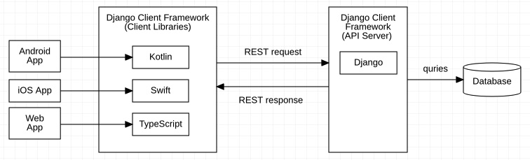

Introduction to the Framework¶
An Overview of the Framework¶
Django Client Framework is meant to work with the famous python server framework Django, and its popular REST API library, Django Rest Framework.
The Django Client Framework includes client libraries in multiple languages, which enables frontend developers to query the database using native programming languages, without having to worry about the communication details at the REST API level.
For instance, when a Product model is defined in Django:
class Product(Model):
barcode = CharField()
With the Django Client Framework, a corresponding model in the frontend language is defined.
class Product extends Model {
barcode: str;
}
class Product(
val barcode: String
): Model
struct Product: Model {
var barcode: String
}
Then to query get a Product object in the frontend, you can use the API provided by the Django Client Framework, which is extremely similar to the Django’s:
let results: PageResult<Product> = await Product.objects.page()
let product: Product = results[0]
product.barcode = "xxyy"
await product.save()
val result: PageResult<Product> = Product.objects.page()
val product: Product = results[0]
product.barcode = "xxyy"
product.save()
let results: PageResult<Product> = try Product.objects.page().await()
let product: Product = results[0]
product.barcode = "xxyy"
product.save().await()
Note
The Django Client Framework has two components, the frontend libraries, and the backend API server based on Django. You need to install both components into your project.
Internally, a communication protocol based on RESTful API is used between the frontend and the backend. The protocol is considered an internal detail of the Django Client Framework, and you should not need to worry about it.
Getting Started with the Backend¶
See also
This section assumes that you are familiar with Django. For a beginner’s guide for Django, see this link [todo].
Installation with pip3+git¶
Django Client Framework (Django) requires python3.6+ and Django 3.0+. To
install Django Client Framework from the GitHub repository, run this in your
shell:
pip3 install -e git+https://github.com/cozybearca/django-client-framework.git#egg=django_client_framework
Configure Django’s settings.py file¶
In settings.py for your Django app, simply add at the end of the file:
See also
If you are not familiar with settings.py, you haven’t completed the basic
tutorial for Django. See [todo].
import django_client_framework.settings
django_client_framework.settings.install(
INSTALLED_APPS,
REST_FRAMEWORK,
MIDDLEWARE,
AUTHENTICATION_BACKENDS
)
Warning
The line must be added after where the INSTALLED_APPS, REST_FRAMEWORK,
MIDDLEWARE and AUTHENTICATION_BACKENDS global variables are defined,
because the .install() function modifies these variables by reference.
An example of the settings.py file is as follows:
import django_client_framework.settings
# ... other configs
INSTALLED_APPS = [
'django.contrib.admin',
'django.contrib.auth',
'django.contrib.contenttypes',
'django.contrib.sessions',
'django.contrib.messages',
'django.contrib.staticfiles',
]
MIDDLEWARE = [
'django.middleware.security.SecurityMiddleware',
'django.contrib.sessions.middleware.SessionMiddleware',
'django.middleware.common.CommonMiddleware',
'django.middleware.csrf.CsrfViewMiddleware',
'django.contrib.auth.middleware.AuthenticationMiddleware',
'django.contrib.messages.middleware.MessageMiddleware',
'django.middleware.clickjacking.XFrameOptionsMiddleware',
]
REST_FRAMEWORK = {
# .. your settings
}
AUTHENTICATION_BACKENDS = [
# .. your settings
]
# Add this line
django_client_framework.settings.install(
INSTALLED_APPS,
REST_FRAMEWORK,
MIDDLEWARE,
AUTHENTICATION_BACKENDS
)
Add routing handlers to urls.py¶
Next, add Django Client Framework’s API route handlers to app’s urls.py file:
See also
If you are not familiar with urls.py, you haven’t completed the basic
tutorial for Django. See [todo].
import django_client_framework.api.urls
app_name = "api_v1"
urlpatterns = django_client_framework.api.urls.urlpatterns + [
... # other routes
]
Note
The .urlpatterns variable provided by the Django Client Framework is just
a list of routes and handlers. You can append this variable to your
urlpatterns list flexiably. Internally, the .urlpatterns is defined as
follows:
# django_client_framework.api.urls.urlpatterns
urlpatterns = [
path("<str:model>", ModelCollectionAPI.as_view(), name="model_collection"),
path("<str:model>/<int:pk>", ModelObjectAPI.as_view(), name="model_object"),
path(
"<str:model>/<int:pk>/<str:target_field>",
ModelFieldAPI.as_view(),
name="model_field",
),
]
Add a Serializable model¶
To add a model, create a model that extends from
django_client_framework.models.Serializable. For instance:
from django_client_framework.models import Serializable
from django.db.models import CharField
class Product(Serializable):
barcode = CharField(max_length=32)
See also
If you are not familiar with Model, you haven’t completed the basic tutorial for Django. See [todo].
The Serializable requires Product to implement a class method named
.serializer_class(), which should return a ModelSerializer. This class is
responsible for converting back and forth betwen a JSON object and a class
object, ie, serialization and deserialization.
See also
If you are unfarmiliar with ModelSerializer in Django Rest Framework,
complete this tutorial for Django Rest Framework first. [todo]
To define a ModelSerializer for Product, we create another class that
inherits from ModelSerializer:
from django_client_framework.serializers import ModelSerializer
class ProductSerializer(ModelSerializer):
class Meta:
model = Product
exclude = []
Error
Django Client Framework’s ModelSerializer is a subclass of Django Rest
Framework’s ModelSerializer class with some methods overriden. Although
they mostly have the same syntax and usage, do not confuse them with one
another! You should always use
django_client_framework.serializers.ModelSerializer. If you use the Django
Rest Framework’s version of the ModelSerializer by mistake, then some of
our API features won’t work!
Finally, we return this class from the .serializer_class() method. The final code
looks like this:
from django_client_framework.models import Serializable
from django_client_framework.serializers import ModelSerializer
from django.db.models import CharField
class Product(Serializable):
barcode = CharField(max_length=32)
@classmethod
def serializer_class(cls):
return ProductSerializer
class ProductSerializer(ModelSerializer):
class Meta:
model = Product
exclude = []
Now you can run migration to apply the new model.
django-admin makemigrations
django-admin migrate
See also
If you are not familiar with Django’s migration system, you haven’t completed the basic tutorial for Django. See [todo].
Make an AccessControlled model¶
Django Client Framework supports both model and object level authorizations. By default, all objects are only readable and writable only to superusers. Next, we will give the read permission to the anyone user group, so that the product list is publically visible to anyone visiting our site.
To manage model permission, Product needs to extend the AccessControlled
class, and overrides a class method named .get_permissionmanager_class(). The
.get_permissionmanager_class() class method should return a
PermissionManager class that implements a method named .add_perms(instance).
The default implementation of .get_permissionmanager_class() looks for a class
named PermissionManager in the model class.
To give anyone the read permission to the Product model, we import the
default_groups.anyone and set_perms_shortcut from
django_client_framework.permissions and use them to set the permissions.
from django_client_framework.models import Serializable, AccessControlled
from django_client_framework.serializers import ModelSerializer
from django_client_framework.permissions import default_groups, set_perms_shortcut
from django.db.models import CharField
class Product(Serializable, AccessControlled):
barcode = CharField(max_length=32)
@classmethod
def serializer_class(cls):
return ProductSerializer
class PermissionManager(AccessControlled.PermissionManager):
def add_perms(self, product):
set_perms_shortcut(default_groups.anyone, product, "r")
class ProductSerializer(ModelSerializer):
class Meta:
model = Product
exclude = []
Now to refresh the permission stored in the database, run this in Django shell:
django-admin shell
# inside shell
from django_client_framework.permissions import setup_permissions
setup_permissions()
Warning
Consider running setup_permissions() during the django migrations whenever
the permission is changed on a model.
Query objects via HTTP requests¶
We need to expose the Product model to the RESTful API by using the
@register_api_model decorator. Add @register_api_model to the Product
class.
from django_client_framework.models import Serializable, AccessControlled
from django_client_framework.serializers import ModelSerializer
from django_client_framework.permissions import default_groups, set_perms_shortcut
from django.db.models import CharField
from django_client_framework.api import register_api_model
@register_api_model
class Product(Serializable, AccessControlled):
barcode = CharField(max_length=32)
@classmethod
def serializer_class(cls):
return ProductSerializer
class PermissionManager(AccessControlled.PermissionManager):
def add_perms(self, product):
set_perms_shortcut(default_groups.anyone, product, "r")
class ProductSerializer(ModelSerializer):
class Meta:
model = Product
exclude = []
Now that the Product model is correctly configured, you can create a
Product object in Django and visit in via the REST API.
django-admin shell
# inside shell
from .product import Product
Product.objects.create(barcode="xxyy")
Start the django development server:
django-admin runserver # Starting development server at http://127.0.0.1:8000/
To visit the list of products, send a GET request to this url:
curl http://localhost:8000/product/
# {
# total: 1,
# limit: 50,
# page: 1,
# objects: [ {id: 1, barcode: "xxyy"} ],
# next:null,
# previous:null
# }
To visit the specific product, send a GET request to this url:
curl http://localhost:8000/product/1
# {id: 1, barcode: "xxyy"}
See also
Besides retrieving the object, creation, deleting, and modifications are also supported through POST, DELETE, PUT RESTful requests respectively. See this link for more details. [todo]
Query relational objects via HTTP¶
The Django model system allows you to define relational data. For instance, we
can add the Brand class in Django. A brand can have multiple products.
Conversely, a product is made by one brand.
Therefore, we define the two classes as follows:
from django_client_framework.models import Serializable, AccessControlled
from django_client_framework.serializers import ModelSerializer
from django_client_framework.permissions import default_groups, set_perms_shortcut
from django_client_framework.api import register_api_model
from django.db.models import CharField, ForeignKey, CASCADE
@register_api_model
class Brand(Serializable, AccessControlled):
name = CharField(max_length=16)
@classmethod
def serializer_class(cls):
return BrandSerializer
class PermissionManager(AccessControlled.PermissionManager):
def add_perms(self, brand):
set_perms_shortcut(default_groups.anyone, brand, "r")
class BrandSerializer(ModelSerializer):
class Meta:
model = Brand
exclude = []
@register_api_model
class Product(Serializable, AccessControlled):
barcode = CharField(max_length=32)
brand = ForeignKey("Brand", related_name="products", on_delete=CASCADE, null=True)
@classmethod
def serializer_class(cls):
return ProductSerializer
class PermissionManager(AccessControlled.PermissionManager):
def add_perms(self, product):
set_perms_shortcut(default_groups.anyone, product, "r")
class ProductSerializer(ModelSerializer):
class Meta:
model = Product
exclude = []
Warning
Don’t forget to apply migrations whenever the models are changed.
After applying migrations, add a Product object, and a Brand object:
nike = Brand.objects.create(name="nike")
Product.objects.create(barcode="xxyy", brand=nike)
Now to retrieve the Product object, send a GET request:
curl http://localhost:8000/product/1
# {id: 1, barcode: "xxyy", brand_id: 1}
Now to query the product’s brand, send a GET request to this url:
curl http://localhost:8000/product/1/brand
# {id: 1, name: "nike"}
Note
Since the product’s brand_id field has value 1, the above query is the
same as the query below, which returns the same brand object.
curl http://localhost:8000/brand/1
# {id: 1, name: "nike"}
Conversely, we can retrieve all products under the brand:
curl http://localhost:8000/brand/1/products
# {
# total: 1,
# limit: 50,
# page: 1,
# objects: [ {id: 1, barcode: "xxyy"} ],
# next:null,
# previous:null
# }
Warning
The last part of the url, /products, comes from the
related_name="products" argument when defining the brand ForeignKey
field on Product. This is the same .related_name in Django that allows
you to write
Brand.objects.filter(products__in=[...])
Getting Starting with Client Libraries¶
See also
This tutorial follows the previous tutorial “Getting Started with the Backend”. In this section, we assume the Product and Brand models are correctly set up.
Instead of sending HTTP requests manually to query the backend RESTful API, Django Client Framework’s client libraries support quering the backend in frontend’s native programming language, with a set of APIs that are similar to Django’s QuerySet.
Install client libraries¶
TypeScript¶
The TypeScript client can be installed with the npm or yarn package managers.
npm install django-client-framework
yarn add django-client-framework
Swift¶
Kotlin¶
Define a model class¶
Since a Product model is defined at the Django backend, we need to define a Product model that mirrors the backend in the frontend language.
Warning
A more accurate statement is that the Product model in the frontend mirrors the ProductSerializer in the backend. This is because a serializer can support fields that doesn’t exist on the model, for instance, through the SerializerMethodField.
Similar to the Django models, the Product model in the frontend should also extend the Model base class.
import { Model, CollectionManager } from "django-client-framework"
class Product extends Model {
static readonly objects = new CollectionManager(Product)
id: number = 0
barcode: string = ""
brand_id?: number
}
Retrieve a model object¶
To retrieve a Product instance, we use the CollectionManager class. To retrieve an instance of the CollectionManager, you can either create it yourself, or access it through tbe .objects static member on the Product class.
import { Ajax } from "django-client-framework"
Ajax.url_prefix = "http://localhost:8000"
let page = await Product.objects.page({})
console.log(page)
/*
PageResult {
page: 1,
limit: 50,
total: 1,
previous: null,
next: null,
objects: [ Product { id: 1, barcode: 'xxyy', brand_id: 1 } ]
}
*/
See also
Besides retrieving object, the client libraries also support methods that modify and delete objects. See the full set of APIs here. [todo]
Retrieve a relational object¶
First, we first add a Brand model:
import { Model, CollectionManager } from "django-client-framework"
class Product extends Model {
static readonly objects = new CollectionManager(Product)
id: number = 0
barcode: string = ""
brand_id?: number
}
class Brand extends Model {
static readonly objects = new CollectionManager(Brand)
id: number = 0
name: string = ""
}
To access the Brand object on the product, we add a brand field of the RelatedObjectManager type to Product, and a products field of the RelatedCollectionManager type to Brand.
import { Model, CollectionManager, RelatedObjectManager } from "django-client-framework"
class Product extends Model {
static readonly objects = new CollectionManager(Product)
get brand() { return new RelatedObjectManager(Brand, this, "brand") }
id: number = 0
barcode: string = ""
brand_id?: number
}
class Brand extends Model {
static readonly objects = new CollectionManager(Brand)
get products() { return new RelatedCollectionManager(Product, this, "products") }
id: number = 0
name: string = ""
}
We get the product that has id=1, then get the brand object off the product:
import { Ajax } from "django-client-framework"
import { Product } from "./models"
Ajax.url_prefix = "http://localhost:8000"
let product = await Product.objects.get({ id: 1 })
console.log(product)
// Product { id: 1, barcode: 'xxyy', brand_id: 1 }
let nike = product.brand.get()
console.log(nike)
// Brand { id: 1, name: 'nike' }